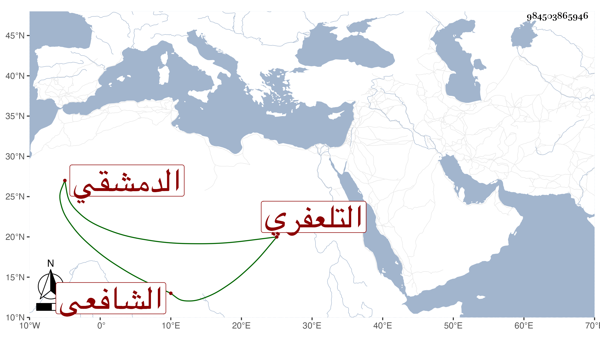

0902Sakhawi.DawLamic.ITO20230111-ara1.EIS1600.984503865946
Biography ID: 984503865946
1041
محمد بن أحمد بن عبد الحق بن أحمد المحب أبو السعود بن الخطيب البليغ الشهاب أبي العباس بن الزين التلعفري الأصل الدمشقي الشافعي سبط الشهاب بن المحوجب ويعرف بأبيه . أحضره أبوه فعرض علي الشاطبية والجزرية في التجويد والعمدة والمنهاج وجمع الجوامع وألفية النحو وتصريف العزى الزنجاني والتلخيص والخزرجية لعبد الله ، ورجع إلى بلده فلم يلبث أن مات بالطاعون سنة سبع وتسعين عوضه الله الجنة وقد جاور أبوه في سنة تسع وتسعين ولازمني في سماع أشياء وذكر لي أن أحمد جده كان شاعرا شهيرا فينظر .
